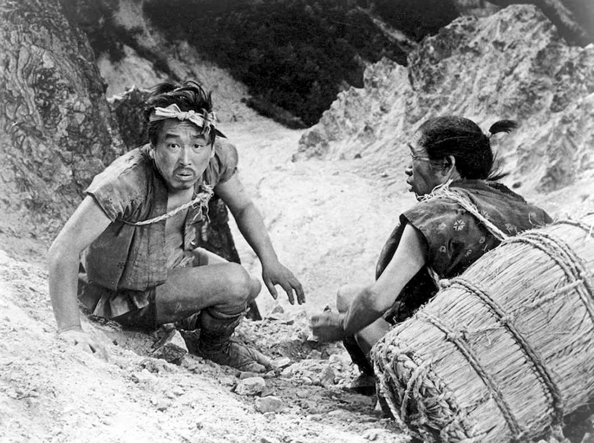
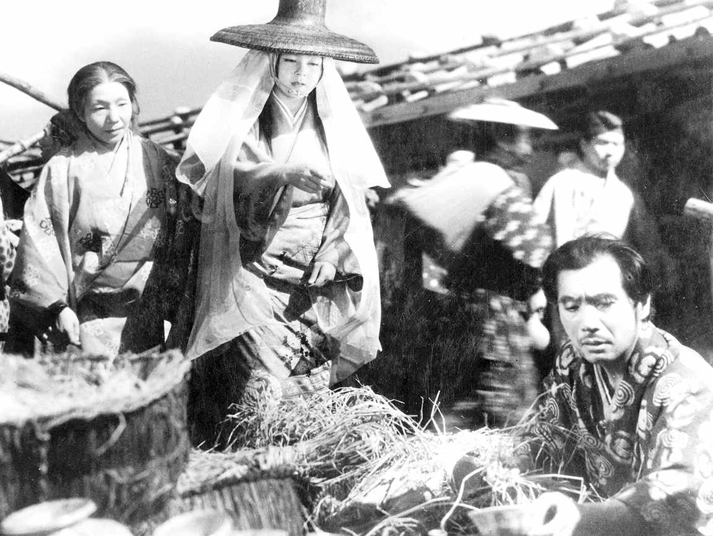
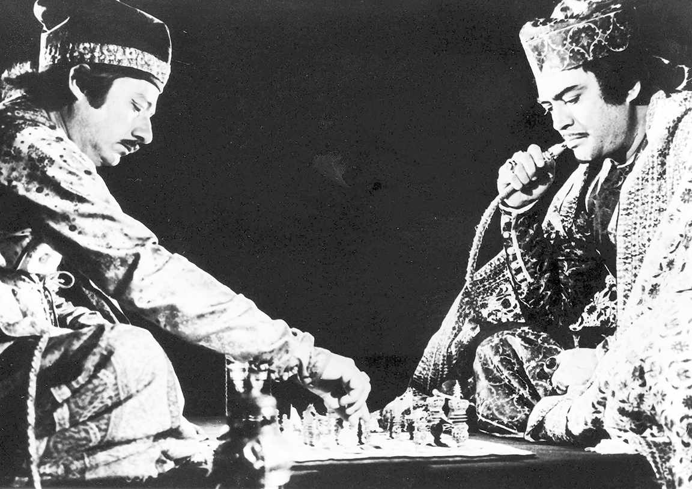
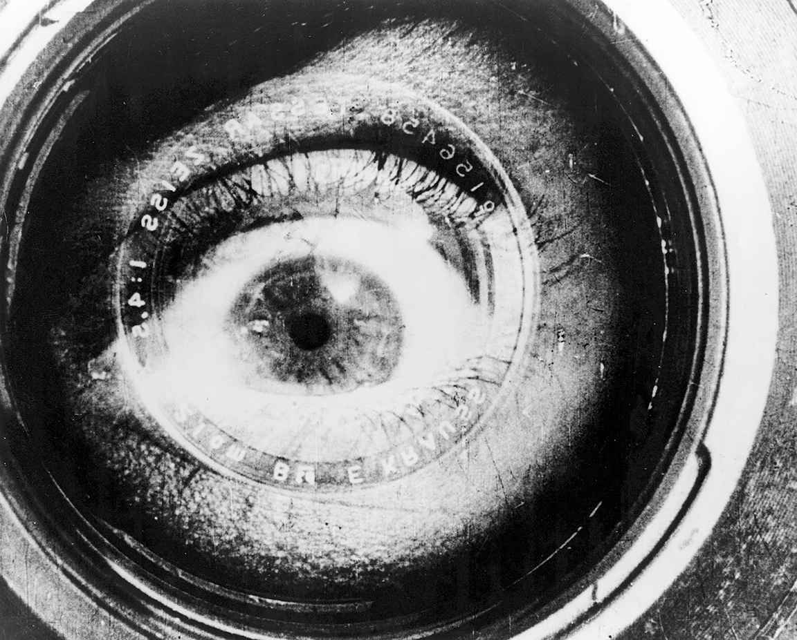
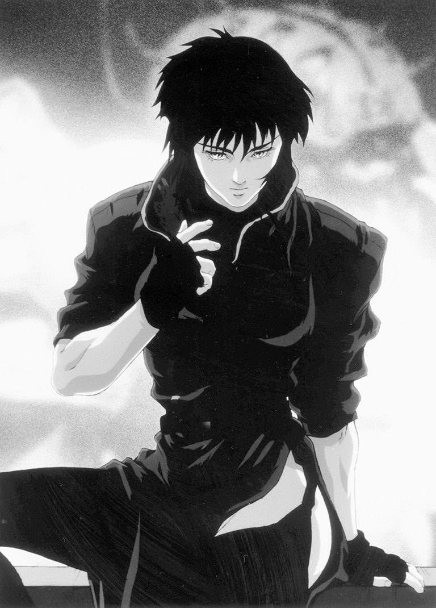

孩提时的费德里科·费里尼认为，故事片完全是演员演出来的，包括情节、对白等；那时他不知道还有导演这回事。当然，他很快就意识到了这个错误，并反而成为一名卓有成就的导演。但费里尼的童年认知也不完全是错的，由于几个原因值得我们仔细思考。
首先，尽管许多电影观众模糊地认为导演这类人一定存在，但他们从未关心过这个角色。甚至对于很多热爱电影，并花费大量时间看电影的人来说，“说出十位导演的名字”也将是一项困难的测试。我小时候痴迷西部片，当我大一点的时候，爱上了歌舞片。我知道所有演员的名字，但那时我的好奇心并未驱使我了解电影制作的方式。如今，我知道斯坦利·多南在《雨中曲》和《好天气》（1955）中指导了吉恩·凯利；文森特·明奈利导演了《一个美国人在巴黎》（1951）。尽管如此，我仍得找一本参考书来告诉你，是谁导演了一系列精彩的、由威廉·博伊德领衔主演的“豪帕隆·卡西迪”电影。当我的同学在读简·奥斯汀的小说时，是“豪帕隆·卡西迪”系列电影塑造了我的道德想象力。（我得注明一下：在60多部“豪帕隆·卡西迪”系列电影中，乔治·阿切因鲍德导演了大概最后12部，霍华德·布雷瑟顿导演了前6部。）
我不记得确切是哪一天，但记得大概是哪一年，我从费里尼的错觉中醒来，开始关注导演们的名字。它很费力，不是自然而然发生的。那是1959年，我看了伯格曼导演的《魔术师》（1958）和他的另外一部电影《野草莓》（1957），以及费里尼导演的《大路》（1954）。这意味着我已经为观赏费里尼的《甜蜜的生活》、戈达尔的《筋疲力尽》、安东尼奥尼的《奇遇》以及伯格曼的《处女泉》做好了准备，这四部电影全都在1960年上映。到了1961年，当我观看布努埃尔的《维莉迪安娜》和安东尼奥尼的《夜》时，我已经可以假装我一直知道导演是电影艺术的核心作用者了。然而，我并非一直知道。这种早年的无知仍然是我从银幕上所获得的经验的一部分，很多人都是如此。借用一种区分来讲——后面我会回过来再谈这一区分，影迷看电影时会想到导演，而电影观众则关注演员。没有理由说一个人不能身处两位，但这两个位置却不一样。
其次，演员的相貌和形体被作为拍摄对象放大，再投射到银幕上，从这一层面来理解，他们的确“制作”电影。演员们也暴露于镁光灯和名望的影响下。约翰·格雷戈里·邓恩曾经写过一本关于电影《因为你爱过我》（1996）的制作的书，书名为《怪物》（Monster ）。书中他写道：“毕竟，在黑漆漆的剧院里，不是我们，而是米歇尔·菲佛在大银幕上会被放大到25英尺高。”克利斯·马克应该也说过：“银幕上的人比那些看电影的人会更高大，否则这便不是一部电影。”演员是电影语言，或者是电影语言很大的一部分：可以说，演员是电影语言的大部分名词。有些著名的导演喜欢对演员发表贬低性的评价。据说希区柯克曾戏称“演员是牲口”，然后狡猾地表示这是人们的误传。他现在声称他当时所说的是，应该像对待牲口一样对待演员。路易斯·布努埃尔曾说过，在《苏珊娜》（1950）的开场中，那只蜘蛛是他拥有过的最佳女演员。然而，即便是这些著名导演也得依赖作为电影语言的演员，而语言常常会反驳。
我们可以通过一个简单的思想实验来了解演员作为语言的重要性，甚至先于让人想起任何一段特定的表演。比如，我们想象史蒂夫·麦奎因在《现代启示录》（1979）中饰演了原本提供给他的角色，我们设想他替代马龙·白兰度成为科兹上校。这不仅仅是另一种角色选择方案，而完全是另外一部电影了。
演员重要性的第三个原因在于，他们通常是那些使电影得以制作的人，至少对那些制作成本高昂的电影而言是这样，正是演员的名字吸引了投资者并带来了金钱。多少明星来来去去，投资亦紧随其后。罗伯特·奥特曼导演的《大玩家》提供了一种很好的讽刺性描述：去掉名字（布鲁斯·威利斯、茱莉娅·罗伯茨），没人会不捆绑明星来贩卖电影故事，这也同时说明他们知道如何将电影和明星效应巧妙地结合起来。当然，对演员重要性的第三个原因的思考，将我们带回到第一个原因：电影投资于他们想象观众会想看的东西。
电影明星的概念有几个层面。最简单的层面是，明星是永远在电影里演主角的那个人；而不论是好莱坞、宝莱坞，还是中国香港，电影（业）的魅力完成余下部分。电影明星和歌剧或政坛中的男/女主角等同，相应地，他们被允许有不端行为。正如最近的一本传记所疑惑的，我们应该想知道沃伦·比蒂是否真的能跟12 775名女性睡过觉。我们的好奇心部分在于，“沃伦·比蒂”到底是谁。不过这样，对明星的这种感觉会平静地化为另一种感觉。明星是一种构建，一种产业宣传引擎的编造。在过去的好时光里，由八卦专栏和电影制片公司的新闻稿所拉长的传奇人生，跟明星参演的任何一部电影的故事一样重要。事实上，通常跟他或她最著名的电影一样重要。大家比较熟悉的明星故事之一，是现实生活和电影投射之间的冲突。诺玛·珍·贝克的故事潜藏在玛丽莲·梦露的传奇中，最终，贝克的故事也被梦露的传奇粉碎。或是如丽塔·海华斯悲凉而诙谐的话引发的绝望叙事：“我认识的每个男人都爱上了吉尔达，但醒来却发现是和我在一起”，吉尔达是海华斯在1946年主演的那部烂片的片名人物。然而，有一些明星似乎没有经历过这种分裂。他们自身便是电影制片公司所虚构的人物，再无其他。
明星既是主角，也是神话，他们的神话往往给自身带来的不只是一点悲伤或灾难。正如《一个明星的诞生》（1954）这个电影名字，一旦我们把它同电影情节联系起来，包括詹姆斯·梅森的自杀以及朱迪·加兰勇敢背后无尽的痛苦，它就暗示了成名的代价，暗示了在如此浮华和幸运的内心深处无法挽回的遗失，就好像我们想要明星为我们借给他们的大笔财富买单一样，就好像这个特别的童话故事需要一个悲惨的结局。
但是明星尤其是某些明星不仅仅是神话，也不仅仅是编造。理查德·戴尔写道：“明星之所以重要，是因为他们表演出了对我们来说很重要的生活的方方面面；当演员的表演对足够多的人变得重要时，他们就会成为明星。”童话故事既有肤浅的，也有深刻的，明星两者皆演。我们不能没有明星，他们也离不开我们。在很多情况下，似乎不是电影，而是明星自己创造了他们永恒的形象，随着时间的推移真正地塑造了自我。劳拉·穆尔维说：“［电影诞生］一百周年前后见证了最后一批伟大的好莱坞明星的逝去。”她提到了马龙·白兰度、凯瑟琳·赫本和格利高里·派克，如果我们想一想劳拉心中的这些人物，便不得不认可明星对他们自己地位的贡献。尽管白兰度大量浪费又不断恢复的天赋讲述了一个绝望的故事，任何一个创造神话的电影制片公司都会以此为傲，但白兰度不是电影制片公司的创造物；不论赫本饰演的角色是好是坏，她都把这一系列角色变成了她想要成为的那个人的肖像。在我看来，派克是一个名气小很多的明星，他所展现的那种顽强而略显愚钝的正派形象，从来没有比他饰演的坏蛋更引人注目，后者如《巴西来的男孩》（1978），他在其中饰演（如果这个词没用错的话）约瑟夫·孟格尔。当然，我们可能想要相信好莱坞已经有了更多最新的明星，而且将来还会有更多。但这些例子确确实实帮助我们了解了明星是多么复杂的创造，以及有多少因素促成了他或她的诞生：天赋、外貌、运气、剧本、角色、金钱，以及我们间接过自己的生活时对帮助的不断需求。
如果我们进一步回顾电影史，想想像葛丽泰·嘉宝和玛琳·黛德丽这样的人，我们对明星的感觉会稍有不同。以嘉宝为例，模糊的摄影和某种超然态度造就了某种距离；对于黛德丽而言，精心刻画的角色和常常令人难堪的反讽也造就了这种距离。这种距离让我们想起“明星”这一隐喻的起源，想起并不属于我们世界的遥远的光辉。即使在我们最野心勃勃或异想天开的时候，这些明星也不会讲述我们的故事。在我们摘到自己应得的星之前，却有一些明星我们永远无法企及。的确，明星的概念和电影院精致奇异的构造有关，后边我会回到这个话题。就好像电影异想天开的本质激发了它周围的幻想，这些幻想与画面中以及展示他们的那些俗艳地方的全部人物有关。“你不是在做梦”，这是法国超现实主义电影《海洋之星》（1928）里的字幕。好莱坞的口号可能是：“你不是在做梦，但我们当然希望你感觉是在做梦。”正因为如此，法国哲学家阿兰·巴迪乌才能说，电影是“把演员变成明星的工具”，或者这至少是“电影的一个可能的定义”。
不过，电影中也有大量未成为明星的演员，并且演员和明星之间的区别在我前面几页的阐述中一直有所暗示。明星可以借角色的名义做一些事情，但不能消失在角色中。在电影的苍穹中，没有看不见的明星。这不是一个弱点，而是一个事实。就像舞台上一名伟大的演员一样，电影明星不是真正的人物。对于舞台演员来说，我们记住他们的表演，而不是他们扮演的角色。电影明星并不是真正在表演，他们只是在表现。他们所扮演的角色和他们所制造的八卦，成为他们生活的一个共同而延续的故事，这反过来又定义了作为明星的他们。
那么，电影演员呢？当然，并不是所有的电影演员都是我刚才阐释的那种意义上的明星，而且很多明星在任何意义上都不是演员，但电影演员以一种奇怪的方式，比任何舞台演员都更像自己又更不像自己。更像自己在于，不管他们的装扮和口音如何，摄影机几乎总是能识别他们作为个人的身份，将他们与他们的身体、时间和地点准确无误地联系在一起。想想看，在以比如古罗马或古埃及为背景的好莱坞史诗电影中，大部分演员看起来有多么像美国人，而他们又如何不可挽回地属于20世纪50年代。更不像自己在于，我们所看到的这些演员，他们的形象全是巨大的投影，是另外一个时空的幻影，这时空不是古罗马或古埃及，而是20世纪中叶永不复返的某一天里明晃晃的摄影棚。他们无法掩饰自己的皱纹，也不能遮掩过度的妆容；他们不能变老，也不能决定自己的台词或服装。
正如人们常说的，电影表演是一种淡化的艺术。就像歌剧演员在科尔·波特的歌剧里加入太多的颤音，舞台演员通常在银幕上会用力过猛。如果允许的话，摄影机将接管几乎所有的工作，而银幕上的静止通常比动作更有说服力。然而，静止就是静止，淡化的艺术仍然是一种艺术。例如，在小津安二郎的电影中，人物经常坐着，除了思考，什么都不做；正如《青年林肯》中的那条河，它只是流动而已。然而，并不是这个世界或电影里的每个坐着的人都在思考，也不是每一条河都能帮助我们思索悲伤往事。一般来说，那些试图让人觉得他们陷入思考的演员，给人的印象是快要大发脾气。罗兰·巴特取笑约瑟夫·曼凯维奇导演的《凯撒大帝》（1953）中大多数演员都在流汗。巴特说道，这是因为这些演员被要求思考。“流汗说明是在思考——这显然是建立在假定基础之上……思考是一种暴力的灾难性的手术，流汗只是最良性的症状。”
但是，摄影机、导演、恰当的故事和合适的演员结合在一起，看似没做什么，实则无所不能。我们甚至不需要小津安二郎的日式精致，在他的电影中，人物遭受了那么多拘谨礼仪的折磨。在《搜索者》（1956）中，导演约翰·福特对约翰·韦恩的要求同样如此，他要求演员/角色用合适的面部表情表现他原本不会感觉到的困惑。我认为《魂断威尼斯》（1971）中包含了西方电影银幕上有关思考的大师级表演。德克·博加德，确切地说，是德克·博加德、卢基诺·维斯康蒂、古斯塔夫·马勒和摄影师帕斯夸莱·德·桑蒂斯的协作，捕捉到了惊异、宽慰和罪恶快感等极其复杂的情感流动，眉毛几乎都不动一下。从表面上看，我们看到的是一张面孔、一个身体、一波碧水，伴以绵延忧伤的背景音乐。实际上，我们在窥视这个人的内心，他找到了一个绝佳的借口（他的行李被送错地方），然后去做他知道自己不该做的事：留在威尼斯，接近他欣赏的那个男孩。
有些电影是没有演员的，准确地说，没有专业演员，也没有人饰演任何一种虚构角色。有些电影，其中很多是近年来为电视制作的电影，仅有的角色是鸟、大象、美洲虎或成片的景观。我之所以这么说，是因为我不相信存在没有角色的电影。在政治纪录片或历史纪录片中，角色是我们从其他文献中了解到的人物原型，而在自然影片中，角色是我们所观看的任何生物或土地，即活动的或非活动的物体。在路易斯·布努埃尔导演的纪录片《无粮的土地》（1932）中，这片土地（在西班牙语标题中叫Las Hurdes ）既是英雄，也是恶棍，它摧毁了它的人类居民并继续存在，它给他们留下的印迹远比他们希望标记或改变它的程度要更加严重和彻底。
拉斯赫德斯·阿特拉斯，即赫德斯高地，是西班牙中西部的一片村庄，离萨拉曼卡不远。在20世纪30年代，大约有6 000人（从一些电影图片上的注解来看，或有10 000人）生活在其中的52个小村子里。布努埃尔说，这些村庄没有民间传说、图像或歌谣，只有疾病、饥饿和孤独。弗雷德里克·詹明信把我们即将进入的这个地方十分恰当地称为“一个残酷而颠倒的香格里拉”。
然而，拉斯赫德斯保留了刚刚好的文化：少量几何学，还有财产的概念，这极其讽刺。影片中的画外音低沉地解说道：“这些孩子非常饥饿，但他们知道三角形的角度之和等于两个直角之和。”在一个特写镜头中，一排小光脚从粗糙的长凳上垂下。一个小孩在黑板上仔细地写道：“Respetad los bienes ajenos ”，意思是“尊重他人财产”，解说讽刺性地将其称为“黄金法则”。
我们穿过一片岩石遍地、尘土飞扬的山区到达这个地方。接着，我们在镜头中首先看到一座村庄的屋顶，这些屋顶低矮而隐蔽。一堆石头房子，像一片杂乱的墓地，或者像解说词所说的，这些房子像一群趴着的“巨龟”。我们后来得知，由于许多房子没有烟囱或窗户，屋里烧火的烟尘就从墙缝和门缝里冒出来。
这部电影细致地表现了村庄生活的方方面面：如我们之前所见的，教育、农业、疾病和死亡。我们看到一位干瘪的无牙老妪正在给婴儿喂奶。在叙述者告诉我们她才32岁之前，我们刚好有时间来消化这个怪异的画面。然后，我们看到一个小女孩躺在空荡荡的没有铺石砖的街上，得知她躺在那里已有三天。一只手伸进画面，拨开小女孩的嘴，显出她的牙龈和严重发炎的扁桃体。叙述者说道：“不幸的是，我们爱莫能助。两天后，我们回到村子，得知这个小女孩已经死了。”
为什么他们爱莫能助呢？他们不能把她带去他们那个有医生和医院的世界吗？我提出这个问题，是因为在我看来，布努埃尔正等着我们这么提问，还因为这与电影潜在的免疫力或无助有关。詹明信说：“纪录片有一种对约定，对政治承诺的怀旧，这种政治性承诺嵌入其中成为一种内在的距离或缺席，一种有罪的良知。”我只想补充的是，这一承诺未必是政治性的，当然，多亏了电影，我才可以为一个死去很久的孩子担忧，为现已去世的导演向我展现了她最后的日子担忧。然而，我依然担忧。如果这部电影是虚构的，如果有人说服我这幅场景是安排的，我不会担忧。正如奥夫德海德所说，纪录片仅保证是真实的再现。但这承诺已远远足够。
不过，我应该谈谈这部电影中一个有名的安排的场景。赫德斯人从山羊身上获取羊奶。山羊在当地的悬崖上跳来跳去，就像这个世界上的其他东西一样，它们面临着危险，总是濒临死亡，有时还不止于此。在某一刻，我们在一个中景镜头中看到，一只山羊正要从岩石的一处跳到另一处。接着是一个远景镜头，我们看到山羊从高高的悬崖上掉下来：它失蹄坠崖。突然，我们看到这只山羊坠崖（一只 山羊坠崖，这只山羊的身份正是被暗示的那样，但仅此而已）的另一个镜头，但这个镜头是从山羊跳跃失败的地方拍摄的：山羊掉到我们的下方，离我们而去。摄影机不可能立刻把自己传送到这个地点，或者实际上摄影机是在等待拍摄，因为那是山羊所在之地。我们突然置身于一部剧情片，置身于某种早期西班牙版本的意大利新现实主义中，或是置身于类似如今被认为是由摄影师精心布置的著名动作片中。我们推测一下，一只山羊在跳跃时被拍下；另一只（我希望已经死了）山羊在镜头前从悬崖上被抛下，摄影机等待这一幕，而不是追拍。当布努埃尔被问及这一幕时，他感到惊讶的是，人们都认为这个场景完全真实——怎么会呢？但他并不认为这样的安排是不真实的：不管他和他的摄影机在做什么，在拉斯赫德斯，山羊正在死去。
由于马铃薯匮乏，赫德斯人常常吃未成熟的樱桃：这是痢疾的源头。他们在河边开辟出一块块可以耕作的土地，但必须从山上搬运适宜的土壤。我们看着他们把一袋袋泥土拖到光秃秃的岩石上，形成狭长的土地。借用布努埃尔关于卡尔·西奥多·德莱叶的《圣女贞德蒙难记》中的人脸描述：整个场景是一种无情的地理景象。在这幅赫德斯人对布努埃尔后来称之为“属于他们的地狱”的忠诚画面后不久，他继续向我们展示了这部片子中最精彩的一组镜头，以及一般意义上蒙太奇最伟大的胜利之一：可以说是爱森斯坦和超现实主义的相会。我们看到一块干涸的河床，一片浑浊的水，在被舀起的样本中，发现了密集的昆虫。突然，镜头切换到医学教科书的页面，里面是不同种类蚊子的插图和描述。一个公正的学者似的画外音响起：疟蚊携带疟疾，在拉斯赫德斯流行。然后，毫无征兆地，影片切到一个中镜头拍摄的颤抖的男子，浑身哆嗦，饱受疟疾的折磨。这有点像从医学院直接倒进了瘟疫地带，我相信，这是只有电影才能达到的效果，并且只有伟大的导演才会想到。比如，没有照片能够表现这名男子真实的颤抖，并且只有电影能够通过这种方式实现从静止的书页到活人的转换，从昆虫图片到疾病肆虐的转换。在我看来，电影在这一刻摆脱了它的无助感。冷漠的是科学，电影却为我们刻画出一个最直接的颤抖的人。
影片结束时，最后一个镜头是黎明时分灰突突的群山，解说讽刺地说道：“在拉斯赫德斯待了两个月后，我们离开了这个地区。”威廉·罗斯曼对这个镜头的解读是：“赫德斯人的土地没有边界。镜头不显示任何出路，在这个贫困地区‘之外’没有任何世界。”这是一种强有力的解读，它与罗斯曼的观点吻合，即赫德斯人生存的这种恐惧“也是我们的恐惧”。的确，《无粮的土地》隐喻式地将我们置于一个没有出路的世界。但实际上，我们从来没有在拉斯赫德斯生活过，或者说，我们绝大多数人都没有去过像拉斯赫德斯这样的地方。所以，这部电影把我们困在了一种由罗斯曼唤起的想像的身份认同感与观看电影给我们带来的彻底的特权之间。纪录片常常并且有效地使我们陷入人种学的这些模糊性中。如果某种程度上，“他者”不像我们，我们不会关心他们。但如果我们真的是“他者”，那么关心的概念也就无从说起了。
让·鲁什执导过经典的《夏日纪事》（1961）和其他许多电影，他说对他而言：
“几乎没有界限”跟没有界限是不一样的，当然，鉴于我试图谈论过的真实世界的魔幻再现和魔幻世界的真实再现之间的细微区别，在很大程度上我不得不重述鲁什的思想。在电影中，只有事物的复制品，即便有些复制品只是印记，而不是对真实的复制。当我谈到电影中的人物时，我指的是我们被请求关注的这个人物生活中的所有事物。不利用想象我们无法产生兴趣，对于真实的事物是这样，对于其他任何事物也是一样。更重要的是，所有的电影，不管是不是纪录片，在我们观看前都是由人的想象力塑造的，它们有角度，被编辑、定位和调整。在这里，主观视觉和客观视觉并不矛盾，甚至不对立。主观视觉专注于除去它自身之外的任何事物，它为我们创造了纯粹凡人能够获得的任何客观性。或者，至少它能够创造它。如果连主观视觉都做不到的话，其他则更不可能做到。正如雅克·朗西埃的见解，有关纪录片的一个问题是，它属于哪种虚构作品。这里所说的虚构，并不意味着神话或谎言，而是指富有想象力的编排，它的兴趣在于参照现实，而不是像自我宣称的虚构作品那样唤起一种现实的幻觉。朗西埃补充说，即使是否认大屠杀的人，也不需要否认大量事实。他们需要否认的是将这些事实转化为历史的联系。
尽管如此，纪录片和虚构电影之间仍有界限，就像布努埃尔电影中关于颤抖的男子不可伪造的镜头和山羊坠崖的虚构镜头之间存在区别一样。如果我们能够相信摄影是对现实不可避免的忠诚这一古老神话，并且为电影而再次接受这一神话，那么我们会很容易说出这种区别。这个男子真的在发抖，摄影机就在那里，不可能不摄录他的颤抖。但坦率地说，这个男子也可能是一名出色的演员，关键是我们就是不认为他是在演，不是说我们不能这样认为，或事实不可能如此。我认为问题不在于摄影机的真实性，而在于我们对影像是否信任。我们信任的是纪录片最强有力和最坚定的宣言：它的图像和故事来自的世界不仅像我们的世界，而且就是我们的世界。这个世界有史可查，有处可寻，若我们愿意观察，会发现它给我们留下了印记，以供探寻。尽管虚构和事实总是相互渗透，尽管这两者都很难达到纯粹的状态，但它们之间有区别。颤抖的男子就是我们不能视为幻觉的幻觉。
如果这个男子似乎蔑视或无视我们的怀疑，那么，阿伦·雷乃执导的《夜与雾》（1955）的画面提供了一项反向的挑战：尽管画面中的一切都在表明它们的真实，但它们蔑视我们的信任。很多人包括菲利普·罗帕特都认为这部电影可能不是一部纪录片，而是一篇散文，换句话说，这部电影更像是沉思，而不是描述。事实上，我一直认为，所有的纪录片都是散文，甚至（尤其是）当它们想像自己并非如此，当它们想象自己仅仅是在叙述事物（不管它可能是什么）的本来面貌时。然而，《夜与雾》是一篇格外富于沉思和优美的散文。
这部电影很快就在色彩运用与黑白图像运用之间确立了对比。色彩表示现在时，也就是电影制作时间和叙述时间，即第二次世界大战结束以及德国集中营的全部秘密被发现十年后的1955年。彩色的画面显示出一种谨慎而刻意的乏味，甚至当镜头从蓝色的天空平静地落到带刺的铁丝栅栏，接着是空旷的田野和废弃的集中营旧址时也是如此。这是现在，然后是过去。我们能从现在看到过去吗？答案是复杂的。我们可以很容易回到过去，我们有图片，电影也向我们展示了很多：电影片段、照片、原始素材，随着影片的进展，这些都变得越来越狰狞。我们根本就无法到达那里，在道德空间和想象时间方面，它都太遥远了。影片的每一个方面都小心翼翼地服从于这种双重反应。
《夜与雾》一开始向我们展现的是挤满囚犯的火车，似乎充满恐惧和威胁，当然，也平淡乏味，平淡得无法让我们超越曾经的悲痛。随着火车满载，德国士兵站在周围聊天、抽烟的景象本身就更具冲击力。我们以前见过这些火车，火车不乏故事，但在当时，这些人怎么能认为正在发生的事很普通，全都不过是一天（不是很辛苦）的工作？这个问题没有得到回答，而是通过借用莱妮·里芬施塔尔导演的《意志的胜利》（1935）中的一系列照片被放大，这些照片展示了希特勒在一场分列式中敬礼，看起来像是一个得到一致支持的国家填满了银幕。那些昂首阔步的士兵，看起来像是被卷入了一场巨大而残酷的芭蕾舞中，而这反过来又暗示着和谐、秩序，以及毋庸置疑的道路。
由让·凯洛尔撰写、米歇尔·布凯解说的评论，以讽刺的口吻对所有这些平常之事进行解说，似乎变得兴奋或富有感情是危险的——好像那样电影和声音可能会失控，或者好像邪恶的平庸之处必须被最大化。正是本着这种精神，解说说起集中营是作为商业建筑项目建设的（“集中营就像大饭店一样建造起来。需要承包商、估价、竞价，当然在高层还得有关系”），并把瞭望塔的建筑风格拿来讲一个阴冷的笑话：“瑞士风格。车库风格。日本风格。毫无风格。”每一帧纪录片画面对应着每一种嘲弄似的风格认证，仿佛这组镜头是学术报告的一部分。在这种语境下，这个笑话表达的愤怒比单纯的愤怒还要多。
这部电影的现在时表达了当过去已经过去时电影所能做到的极限，这一现在时的中心时刻化为一个很长的推拉镜头，沿着前集中营里的一排空床铺拍摄。在罗兰·巴特的阐述中，这样拍摄面临的挑战是，要想象这些床上住满了活着的人——谁将会死去，谁已经死去。只是，既然这是一部电影，他们不会死去，因为他们无法进入摄影机的画面，移动摄影机也没有时间或空间给他们。当然，因为完全相同的原因，他们也不会活下来。他们不在那里。摄影机无法拍摄他们，这让我们很难记住他们。在这一点上，解说特别有说服力。
镜头来到一排空床铺的尽头，在一堵空白的墙上停下来，再沿着床铺往回走，“好似”，用威廉·罗斯曼的话说，“不断穿越这一长排空荡荡的床，是它不可改变的命运”。
影片结尾也强化了这一点。我们看到一些关于集中营解放的以前的素材（现在大家都很悲伤地熟悉了）。那些幸存的囚犯，满脸恐惧，眼神穿过带刺的铁丝网，盯着理应是他们自由的意象的地方，即围栏这边的世界。解说问道：“他们被释放了吗？日常生活将会接纳他们吗？”我们注意到，这些囚犯意识不到这些。接下来，是一段纳粹的头目和两名军官拒绝承担责任的素材。解说问道，该由谁负责？我们看到一个脸色苍白的囚犯在悲伤地向下看——他在看什么？——接着我们回到以下场景，它让我们想起在看到解放集中营片段之前我们所看到的那幅令人恐惧的情景：骨瘦如柴的尸体被丢进坟墓，骷髅被人用手成排地摆在地上，烧焦的尸体，一帧帧满是眼镜、鞋、碗、剃须刷、女人的头发的画面，成堆的尸体被拖拉机铲起，倒进土坑。所有的黑白照片、胶片和照片都是由过去难以想像的摄影师拍摄的。接着，在看到囚犯等待释放的场景后，我们看到三张静态照片，或者可能是同一张照片的三个不同特写，再次展示了尸体的堆积和扩散，像一种中世纪的版画，一场混乱的死亡之舞。随后，银幕开始变为彩色，变成带紫色点的浅绿，看起来像是一种凌乱的莫奈风格，这种关联也不是毫不中肯。这是一面覆盖着一座集中营掩埋场的池塘，一个模糊的（在1955年）、或多或少没有意义的影像。然而，它在历史上的存在很快就消失在解说为它定下的隐喻中：“我们糟糕记忆的冰冷浑浊之水。”解说问道：“我们之中，是谁从这个奇怪的瞭望塔瞭望？”似乎集中营的瞭望塔本身就成为了解过去的一个视角。画外音还在继续，有人不相信这些，也有人有时会相信。还有“我们”，由电影制作者和观众组成的共同体，被描述为“真诚地注视着这些废墟”，并假装相信这样的暴行只属于一个时期和一个国家。
这是我们假装相信的一部分。我们也在假装或许我们比自己实际上更了解这些情况。但我认为，我们主要是在挣扎，电影让我们陷入挣扎，在由平淡彩色的现在与黑白过去惊人的明确性之间的区分所代表的不论何种分离中挣扎。我们不能否认其中任何一个元素，也无法将它们组合起来。影片结尾暗示，集中营可能会在任何地点或任何时间再次出现，毫无疑问，这一暗示出于好意，也很到位。但这并不是1955年的世界真正给人的感觉，它的善意和体贴是对电影自身主题的逃避。在我们担心这些事情是否会再次发生之前，我们必须确信它们曾经发生过。当然，我们相信了，但同时又感到困惑。现在我们的确会说“无法相信自己的眼睛”，我们的意思从来都是，我们不得不相信自己的眼睛，但无法应对它们的所见。我们的情况既不是遇到《无粮的土地》中那个颤抖的男子，也不是看到卢米埃尔的神奇复原的墙。在第一种情况中，如同银幕上的所有事物，我们确信这个男子和他的疾病都是真实的。在第二种情况中，正如我所说的，画面既真实又不可能。《夜与雾》的恐怖景象既是真实的，也是难以想象的。我们很难相信自己相信了它们。我们的怀疑既是一种美德——一种对震惊的忠诚，也是一种负担——在一定程度上它促使这些画面从过去猛烈的清晰淡入现在空洞的朦胧中，正如电影本身的语言所暗示的那样。
1914年，全世界发行的电影有90％来自法国；到1928年，美国电影占到85％。这一大转变是让——吕克·戈达尔在他那部由八部短片组成的《电影史》（1997——1998）中提到的，他说第一次世界大战使得美国电影摧毁了法国电影。接着，戈达尔又冷酷地补充道，随着电视的出现，第二次世界大战使得美国电影“向所有欧洲（国家的）电影提供资金，换句话说，摧毁了欧洲国家的电影”。这只是事实的一部分。另一部分是，法国沦陷时被禁映的大量美国电影，在第二次世界大战后像泄漏一样涌入法国，并使得法国电影得以重新塑造，戈达尔的电影属于这种再造的很大一部分。可以说，没有尼古拉斯·雷和塞缪尔·富勒，就没有《筋疲力尽》（1960）。尽管法国人拥有让·雷诺阿，但安德烈·巴赞的大部分电影理论是建立在奥逊·威尔斯和威廉·惠勒的电影基础之上的。
如今美国电影仍在全球市场占据很大份额。2010年初，《阿凡达》自中国的1 628块银幕上下映，原因是它太惹眼，它的替代品是中国本土制作的一部关于孔子的传记片。但如果如联合国教科文组织2010年的报告中所说，“美国电影继续支配着入场券”（2006年的数据），也有一些有趣的例外，有的本土制作依然占有优势，如印度电影和法国电影。印度是影片制作数量最多的国家：2006年高达1 091部（这个数字是指正片长度的电影）。尼日利亚以872部名列第二，美国以485部排名第三。相比之下，该年度法国制作的电影是203部，英国是104部。尼日利亚的例子尤其重要，特别是对关于电影可能死亡和继续存活的争论而言，借用这份报告中的话说，因为这个国家“几乎没有正规的电影院”，所有的观影都是在某种家庭或临时搭建的环境中完成的。
戈达尔在《电影史》中引用了一句口号：“商业追随电影”，但电影和国家并不是纯粹的经济实体。齐格弗里德·克拉考尔在《从卡里加里到希特勒》（From Caligari to Hitler ，1947）一书中认为，从某一时期的电影中可以推测出整个德国的心态。这类关键举动太容易了，尤其是在事后看来；但似乎可以肯定的是，时间和地点可以结合起来创造出非常特定的、不可重复的电影——俄国实验电影、英国喜剧片、意大利新现实主义电影、法国新浪潮电影、巴西新电影。记住，一切都可能不同，并且记住马克斯·韦伯的格言，即对国民性格的信仰是一种迷信，我们没有理由不试着去看看其中的一些结合可能意味着什么。
正如克拉考尔指出的，从《卡里加里博士的小屋》（1920）到《诺斯费拉图》（1920），从《大都会》（1927）到《马布斯博士的遗嘱》（1933），一系列优秀的德国电影通过幻想，给我们讲述历史上的世界，讲述那个世界可能的样子以及在某种程度上已经成为的样子。这一解释性主张与阿多诺关于偏执的说法相似，即“现实中一些东西在偏执的幻想中引起共鸣，并被它扭曲”。魏玛德国的现实引发了这些带有倾向性的观点，事实上，这些陌生的医生和吸血鬼诡异地发现了他们的模仿者。
意大利新现实主义的情况大不相同。太多的恐惧已经被满足，太多奢侈和残忍的幻想已经取代了过去的政治。从罗西里尼的《罗马，不设防的城市》（1945）到德·西卡的《偷自行车的人》（1948），再到维斯康蒂的《洛克兄弟》（1960），一系列阴郁而真实的电影为彻底扭曲的世界提供了纠正，或者还给了我们一个未被扭曲的平凡早已从视野中消失的世界。这不单单是使用业余演员或真实场景的问题。如同在纪录片中一样，在这些影片中，“真实”不是仅仅通过偶然或纯粹的电影技术拼凑起来，而是被细致地组合。关键是它们需要被组合在一起。事实上，如果我们不理解现实在何种程度上被认为已经失去，我们就很难理解这些电影的力量，以及在何种程度上这种失去是不光彩的——戈达尔认为：“有了《罗马，不设防的城市》，意大利仅仅只是恢复了一个国家正视自己的权利。”
法国新浪潮则更不相同。一群电影制作者和准电影制作者接手了法国的电影产业，它意味着光鲜的、制作精良且价格高昂的电影。从《四百击》（1959）、《表兄弟》（1959）、《筋疲力尽》（1960）到《祖与占》（1962），这一系列疾风骤雨似的电影，与已然成名的导演如雷内·克莱芒和克劳特·乌当——拉哈不疾不徐的电影形成了一种显著的、颠覆性的对比。如同在意大利一样，这些电影在某种程度上的目标也是一种现实主义，一种对已经消逝的日常世界的感受。但在法国电影中，这一日常世界更奇怪，对年轻人、反叛和希区柯克而言，它比任何历史或政治议程都要更真实。即便电影含有大量的政治元素，情况也是如此。戈达尔导演的《小兵》（1960）的故事情节以阿尔及利亚战争时期为背景，主要涉及暗杀、酷刑和审讯。影片中安娜·卡里娜说，被拍照就像被警察盘问一样。这并没有使她的朋友米歇尔·索博有任何犹豫，正是索博在为安娜拍照。他用权威的口吻说道：“摄影即是真实。”这场戏剩下的全是关于照片，活动的或是静止的。我们看着索博拍下他的照片，我们看到他自己的静物相机无法捕捉到的全部动作，当然，我们也看到了他在拍照过程中自己的所有动作。稍后我们听到索博的旁白，还有一些图片，它们不可能来自房间内任一相机的视角，只能是来自完成的、成熟的电影：它们看起来就像已拍好的时装照片，只是在画面中微弱而持续的晃动中受到了干扰。在这种情况下，摄影和电影即是真实，不是因为它们的诚实和简单，而是因为它们向我们提供了被毫无防备捕捉到的现实的多重视角，因而作为现实很难被否认。在《电影史》中，批评家塞尔日·达内对戈达尔说，他很幸运出生得足够早，因而能够继承已是丰富而复杂的电影史——言外之意，还不至于太晚而不能为此做点什么。
自默片时代以来，日本的电影工业蓬勃发展，然而，有很多时候都堪称典范，因而很难挑出独特的例子。但在20世纪50年代有一段时间，一些特定的关注集中在极为不同的电影制作人的作品中。在这里我们或许可以接受法国导演雅克·里维特提出的打赌。
里维特认为，我们根本不应该把沟口健二和黑泽明放在一起，因为“你只可以比较具有可比性的，以及目标足够高的”。这是一种常见的想法，尤其在法国批评家中更是如此。里维特评论道，沟口健二是“彻底日本的”，而黑泽明是某种国际冒险家，受到约翰·福特的影响。我们可能会认为，沟口健二和黑泽明都选择了他们表达日本风格的方式，因为这就是他们过去的风格，而在我想要简要介绍的电影中，他们风格的真正差异集中在对国家不同的思考上。
《雨月物语》（1953）和《战国英豪》（1958）的故事背景均设在内战时期，实际是在同一时间：16世纪。两部电影都考虑到了近代的国际战争，都把战争描绘成一种受骗的人在其中谋求利润的环境。“钱就是一切”，“战争对商业有利”，这两句话出自《雨月物语》，但这两句台词同样可以轻易地出自《战国英豪》，如果这部电影里有任何人拥有像商业一样可敬的或粗俗的东西。这部电影的相关说法是，一个人可以“从战争中发大财”。在两部电影中，两个农民都有超越他们身份的希望和野心，这遭到有力的嘲笑和批评，特别是在几个演员的闹剧式表演中——《雨月物语》中的小泽荣，《战国英豪》中的藤原釜足。但他们的希望最终并没有以古老而不那么混乱的社会秩序的名义被消除或贬低。也就是说，两部电影都不支持这些令人讨厌的奋斗者的行动，但都承认他们是重要的历史力量和欲望的标志，并且毫无疑问，相比16世纪，在20世纪更是如此。

图4 不为利润
但我不能再讲下去了，我还没有指出这两部作品之间的巨大差异。《雨月物语》是一部安静的、缓慢的、抒情的电影，死亡是它的主题。《战国英豪》是一部冒险片，影片重心是两个滑稽人物。《雨月物语》中，农夫的野心——一个想成为武士，另一个想要售卖陶器大发横财——结果成为致命的或绝望的破坏。《战国英豪》中，两个拾荒者却得以逃脱性命，并且，他们至少得到了一点他们想要的东西：他们到战争中寻求的小部分财富。然而，在《战国英豪》中，我们看到了一场对黑泽明导演的《乱》（1985）中场面宏大的可怕大屠杀的演习——这是他第一次运用宽银幕。在这部电影中，就像较晚的那部一样，人物喃喃低语，带着仿佛末日启示般的精准：“这就是地狱”，“这就是世界末日”。
据说《战国英豪》中的两个人物是《星球大战》中R2D2和C3PO的原型，他们常常显得滑稽可笑，却很少令人愉快。他们被卷入公主以及保护她的将军的逃难中，如有可能，他们无时无刻不想背叛这些贵族，并再三计划强奸公主——但《星球大战》中的莉亚公主有护卫队保护，并不担心安全。换句话说，在《战国英豪》中，阶层之间被要求形成一种纽带，并相互关照；骑士精神拯救了这一天，但只是因为它变得现代化和人性化了。黑泽明说，他想要制作一部“充满刺激和乐趣”的电影——不同于他的《蜘蛛巢城》和《低下层》（均是1957年），这两部电影分别从莎士比亚和高尔基那里借鉴了大量的黑暗元素。黑泽明确实做到了。然而，他是通过表达而非消除一整套当代日本人的担忧做到的。
《雨月物语》最后几场戏的气氛很复杂。制陶工源十郎偶遇的不是公主，但肯定是一位出身高贵的小姐，小姐爱上了他，带着他一起生活。源十郎忘记了妻子，忘记了一切，只沉浸在美妙的爱情以及神奇进入的优雅精致的世界中。后来他发现自己的情人是个鬼魂，惊恐万分。但当我们了解到她因太年轻去世而不知情为何物，于是重返人间寻求所谓的普遍体验时，我们更容易被她吸引。最终，几年后，源十郎留鬼魂独自悲伤和湮灭，然后回到故乡。战争给村子造成巨大破坏，他的家看上去冷冷清清，空无一人。但他发现妻子到底还是在家里，她为他准备了一顿饭，在他睡着的时候看着他。妻子的举止有一种奇怪的忧伤，看上去像是一种复杂的告别，而不是欢迎。不管这组镜头看起来多么漂亮，我们都可能会被这里的色调所迷惑。但时间并不长。清晨来临，源十郎醒了。家里同他刚回来时看到的景象一样，冷清孤寂。原来他的妻子已经去世多年，是她的鬼魂在欢迎他回家。

图5 谁是鬼魂？
如果说在《战国英豪》中，战争是一种可能成为常态的例外状态，那么在《雨月物语》中，战争是一种超越庸俗机会主义的状态，它允许人们尝试穿越到梦想的世界。在某种情况下，尝试并实现它。然而，梦想的世界也是一个死亡的世界，这是双重的，因为当你在那里的时候，死亡接管了现实世界。与其说战争是一个暴力场合，不如说战争是一个多缝隙的时机，是世界之间关系不确定的时刻。沟口健二从不说教，但我们很难不觉得他在指向道德上的弱点，指向当前希望中的某种深层缺陷，它使得错误成为灾难，再一次地，我们很难认为他想的只是16世纪。
孟加拉语电影，特别是萨蒂亚吉特·雷伊的电影，在风格上和道德上都非常接近意大利新现实主义：就像置身于“阿普三部曲”中被忽视的宁静祥和之地，这三部曲包括《大地之歌》（1955）、《大河之歌》（1956）和《大树之歌》（1959）。但时间和历史的节奏是不同的，并且我们在雷伊的电影中发现了对帝国的理解，这与任何对帝国的理解都远远不同。这一点对于相对被忽视的《下棋者》（1977）来说尤为真实，这是雷伊导演的唯一一部乌尔都语电影，也是少数几部情节背景设定在过去的电影之一。
这部电影到处都是值得称赞的慢镜头。在一个特写镜头中，我们从侧面看到一盘棋局，棋盘上有棋子，背后倒下的棋子起起落落，移进移出。一只戴着戒指的粗短的手进入画面，移动棋子，然后挪开。画外音中，一位风趣又稍显冷漠的叙述者把象棋和战争做类比，我们当然对这一点感兴趣，还有叙述者所说的总督达尔豪西勋爵，他代表东印度公司吞并了印度的一大块土地。从这一平稳的侧面视角来看这盘棋，华丽雅致的红白象牙棋子，它抗拒的不仅是象征，还有任何解读，这部电影让我们想起所有闲散、痴迷以及无目的的事物，所有停在历史边缘的事物，它没有抓住无论大小世界的统治者的残暴意图。
在电影的一大固定套路中，我们遇到了同样的内容，理查德·阿滕伯勒是东印度公司在奥德的代理人，他要求阿瓦德国王签署一份退位条约。我们知道每个人的心思，因为我们在不同场景中看到他们以不同的方式承认自己的错误，并且承认正在发生之事是个大错。在电影巧妙情节的长时间构建中，一切都得到了解释，我们了解了场面为何尴尬，我们知晓两人埋在心里的话语。当我们在观看这一场景时，不会忘记这种种。相反，我们对背景知识的了解影响到场景中的每分每秒。即便如此，我们还是注意到了别的东西，它甚至不是一个完整的故事。

图6 有下一步棋吗？
我们看到代理人阿滕伯勒红了脸的尴尬，他那布满斑点的皮肤本身就是一张帝国地图。我们听到他恃强凌弱的语气，尽管我们知道他也认为这种恐吓胁迫是不对的。而在国王的脸上，我们看到的不是他已充分表达过的对这场灾难的责任，而是一种超越悲剧的忧郁。雷伊的镜头回到这些面孔上，尤其是国王，带着一种思考式的、困惑的好奇心，停留着，因为除了停留，无事可做。时机是至关重要的，镜头回到脸上，等待着。这么说吧，除了重复，脸上什么表情都没有。除了欺凌和忧郁，镜头的停留暗示的不是无助，而是对错综复杂的人类同谋的一种敬畏，对戏中没有人想要，但每个人都扮演一个角色，接受一个角色的敬畏。
导演自己并不是这个悲惨故事的同谋，但他和我们在其他方面却是共犯，即当我们失去叙事，或失去对历史的解释时所感到的困惑。这种失去不会长久，我们也无法忍受叙事和阐释的缺席，它们会大批地返回。这就是为什么电影、生活和历史都有叙事，这也是它们如何参与进连续的、前进的时间。但还有另一种时间，有点像瓦尔特·本雅明所唤起的弥赛亚时刻的对立面，那种突然的、总是出人意料的启示的对立面。雷伊的时间是救世主无法降临的时间。没有人会来，没有什么会发生，没有意义会显现。至少，我们都还不知道。当然，这种时间并不局限于雷伊的电影，但很难想象会有谁能更好地理解它。
所有的电影一开始都必然是实验性的，卢米埃尔兄弟思考了一段时间，认为活动图片的主要用途之一可能真正在科学实验中。当然，商业电影在技术上可以是且常常是实验性的，想想随着1982年（之前的使用更有限）的《电子世界争霸战》而大规模涌现的计算机合成图像，或是相机和色彩可能性的众多发展。我还想说的是，大众娱乐往往具有实验性优势，这在喜剧和悬疑剧中尤其如此，因为总是有新的技法以供尝试，你永远不知道什么会抓住大量观众的想象力。我们已经看到了一些在早期动画中占据主导地位的实验手法。
但是，当电影产业稳定下来时，电影已经接受了叙事，并将讲述故事确定为其主要任务，先是通过图像和字幕，后来是图像和声音。在这种模式中，这种新媒介作为一种艺术形式，作为一种视觉游戏或视觉探索，如同达达主义和超现实主义对语言及渴望的玩弄和重塑，它的可能性被公众严重忽视了。如果重要的是要记住“电影”对大多数人而言意味着叙事性的故事片，那么，要记住电影还意味着更多的可能性同样重要。其实这些可能性一直在发生，比如马塞尔·杜尚的《贫血的电影》（1925）以及雷恩·莱、斯坦·布拉哈格和威廉·肯特里奇的电影。我们不是在谈论后来被人熟知的艺术电影，即一种高格调的叙事电影，我们谈论的是作为视觉艺术形式的电影。正如劳拉·穆尔维精彩地指出的那样，在电影中，电影制作者“不断地将电影的手法和素材呈现为视觉形式，缩小了胶片和银幕之间的距离”。
我最后一次在公共场所看雷内·克莱尔的《间奏曲》（1924），是在巴塞罗那的一个博物馆，它在座座雕塑间循环播出，这些雕塑主要是胡安·穆尼奥斯的作品；另一个房间在播放罗伯特·莫里斯的电影《雕塑人生》（Waterman Switch ，1965年的舞蹈创作，电影版更晚）。这些展出的艺术形式之间的联系十分精妙。克莱尔的电影看起来像是一件由技术玩弄运动把戏的匠心独运的雕塑。穆尼奥斯的雕塑，特别是《提词者》（The Prompter ）或《荒原》（The Wasteland ），看起来就像那些已经结束的电影，被定格为衰退的静态画面。穆尼奥斯为他的作品写道：“你必须前来，观看，绝望和微笑。”
《间奏曲》启发了路易斯·布努埃尔和其他许多先锋派艺术家。它以一个滑稽的电影故事开始，在虚拟的抽象中结束，看起来就像一部快速的、无意识的实验电影史，或是实验电影历史的一部分。电影一开始，是各种滑稽动作，一座没有固定的大炮自己在四处移动，两个人以十分缓慢的动作跳跃，像是在飞翔。在各种各样的恶作剧之后，另一个人被杀死，然后，电影开始记录他的送葬队伍。应该说是来关注这支送葬队伍的变化。一辆老式灵车在教堂外等候，但当我们寻找这辆灵车应该配备的马时，镜头向侧面移动，车轴之间出现了一匹骆驼。这是一个很应景的超现实主义笑话，但并没有像超现实主义笑话那样不守常规。这一移动不像布努埃尔那样粗暴——它发生在布努埃尔有机会在电影中做任何镜头转换之前——展示了一个无腿的人坐在一个带滑轮的小盒子里，双手划地前进，急切地想加入这场追逐。几个镜头之后，其间我们正疑惑是否应该觉得这一行动十分搞笑，这个人失去了耐心，从盒子里爬起来，四肢健全，开始奔跑。
与此同时，葬礼上站着许多衣着正式、表情严肃的人，不少人的脖子上都戴着花环，他们走下一排台阶，在灵车后面排起长队。这些人是由导演的一群朋友扮演的，包括马塞尔·杜尚、曼·雷和弗朗西斯·皮卡比亚，其中，皮卡比亚撰写了该剧本。这时，发生了一件很不寻常的事，这件事很容易被描述为一次事件，但几乎不可能造成影响。骆驼以一种稳定的步伐走起来，队伍中的人开始……以夸张的慢动作在棺材后面跳跃。只是这种慢动作的跳跃看起来不像奔跑，它像是一种表达对一个人的尊重的新方式，像是一种当地风俗。这些人在遗体的后面认真地穿行在空中，特别是一位老太太，正积极地投入到这项活动中，她的双腿笔直，整个队伍像是漂浮的死亡行军。这个队列继续前行，摄影机从不同的角度拍摄，并选择队伍中不同的人拍摄，持续有一分半钟。我们可以对这个恶作剧有各种各样的反应，但在基本技巧可能暗示的任何东西之外，它很有趣。我的双重反应一直都是：只有电影能做到这一点，以及这就是电影应该做的，至少在某些时候是这样。
在某一刻，灵车自由了，它挣脱了骆驼，向下驶去。它起起落落，穿过森林。在这个阶段，电影几乎完全抽象：形状和线条旋转着，闪烁着，我们从灵车的角度看这个世界。尽管我们可以将这些形状解析为树叶、铁轨和护栏，但那不是我们所看到的。我们看到运动本身，看到我们在运动，这是我们从静止的世界在镜头中飞驰而过推断出来的，就像在斯坦·布拉哈格的《飞蛾之光》（1963）中，树叶、花粉和翅膀以惊人的速度形成和重构一样。事实上，有时我们看到的东西似乎更加模糊，我们认为自己看到的是纯粹的电影，空白胶片跑过摄影机的孔径，看到的是一种运动形式，或是对运动的模仿，它完全属于技术，而不是被展示的或被拍下的世界。
当我们看实验电影时，即便没有发生这种情况，我们也会有这种感觉，这正是因为银幕和胶片总是可以联结起来，而当电影依赖于运动镜头和静止世界的关系时，这种感觉就非常强烈了。如同布拉哈格的《奇妙的浮现》（Wonder Ring ，1955），这部短片主要是在纽约第三大道的老式高架电车上拍摄的，它在车站之间一路拍摄。作为对这部电影杰出的回文式回应，约瑟夫·康奈尔的Gnir Rednow [1] （1955）将同一部作品从左向右翻转，并倒放复制出来。我们在这两部影片中看到：楼梯、站台、门、售票处、乘客、办公楼和仓库，其中一些偶尔也会自己移动。也不是电影的所有内容都是从行驶的列车上拍摄的。但主要的和最奇妙的效果是，摄影机不是在捕捉或表现运动，而是像《间奏曲》的片尾，它在表演运动，让静止的世界滑动起来。吉尔·德勒兹认为：“运动的摄影机大致等同于它所展示或利用的所有运动方式。”琳恩·柯比认为早期电影对列车有特别的喜好，穆尔维也引用了这一观点。可以认为，在电影出现之前我们最重要的电影经验之一，就是坐在火车或汽车上看世界掠过，就像我们揭示的那样，在此语境下我已经说过两次。
这让我们回到了第一章中我所提出的关于运动和动画的思考，我们现在可予以详细阐述。作为主要用于捕捉运动真实情况（或是它真实表现的样子）的发明，电影几乎可以瞬间以不同的放映速度开始播放，并使得静止之物看起来像是在自发运动。从卢米埃尔的工厂到昨日的婚礼视频，移动摄影机最持久的日常工作是为了跟上世界的运动，它总是可以把运动的镜头变成纯粹的运动，成为旅程的复制品而不是照片。看那些能唤起这些问题的电影并思考问题本身的乐趣在于，我们能轻松地做那些听起来很困难的事。无须片刻思考，我们将我们的感知与理解分离开来：在给定的影像中，我们知道什么在“真正地”运动，什么在“真正地”运动却有着错误的速度，以及什么根本没有运动——就像《间奏曲》中灵车似乎要撞上的明显靠近的墙。这是相对论的一课。这里有东西在运动，正如照片中没有东西在运动。但是，运动有时是一个事实，比如一个站着的人突然跑起来，有时是一种关系，比如这辆车比这匹骆驼跑得更快。有时，这种关系必须被推导出来：墙的明显运动标志着摄影机的真实运动。斯坦·布拉哈格写道：“一切恐惧的消除都是在望的”，这个双关语同时表达了机会和待定。了解我们的所见，特别是当我们似乎在看别的事物时，无疑可以减少我们的恐惧。但这种可能性也许仅仅在“视力范围之内”，还仅停留在“菜单”上，而不是“已递在手边”或是“已端在桌上”。
关于“什么是可见的”这个问题，在明显更简单的实验作品如理查德·塞拉的《捉铅的手》（1968）或者马塞尔·布达埃尔的《雨》（1969）中同样存在。在《捉铅的手》中，我们从侧面看到一只手试图一把抓住铅片，画面中小铅片有时连续有时间断地从顶部掉下来。这只手时不时地调整自己在画面中的位置，有一次还简洁地朝扔铅片的人以手指示意，表明需要加快速度。但镜头没有切换，也没有移动。这部电影有将近三分钟的时间。我们在看什么？当然，这是一种空洞的运动模型，摄影机捕捉到的运动。这只手是否抓住了下落的铅片，又失败了多少次，这些重要吗？这部电影的片名根本没有提到它的失败。不，重点肯定是紧抓着的手和下落的铅片，抓握和重力这两种运动在影片中不断地相遇和错过。在所有运动问题中存在的时间问题，可能是最基本的元素。电影有一个时长，每个人都会随着它的播放而变老，包括手的主人、抛铅片的人和观众。当然，尽管这只有大约三分钟的时间，但电影不希望我们忘记这一点，并为我们提供了一个强大的视觉标记。不管这只手是否抓住了铅片，手经常触碰到它。在电影的结尾，手因为这种接触而变黑了，时间留下了它灰突突的铅色印迹，即使最后那只手仍然是空的。确切地说，大概是因为彩排，一开始那只手就很脏，但后来它确实变得更黑了。
布达埃尔的《雨》是最令人难忘的短片之一。一个人正坐在铺在木箱上的一张纸面前，我们从不同的角度观看他。他有一瓶墨水，他用笔蘸了墨，然后开始写字。当他写字时，雨水落在纸上，稀释了墨迹，写的字变成了流动的墨水画。他继续写；雨继续落下。最后他浑身湿透，只好放弃。这个短片持续了两分钟多一点。它的副标题是“写字计划”，其晦涩而浅显的故事暗示了失败或糟糕的计划：比方说，写作最好在室内进行，或者这天气不适合书写。然而，它的另一个故事，它上演而不是讲述的故事，更令人愉悦：糟糕的时机，下雨时在户外写字，会产生两件新的艺术品，即纸上的墨水画和这部优美的电影。第一个故事可能是一则寓言，讲述了失去好运是多么容易；而第二个故事暗示了我们有多么不想失去。这里也潜藏着一个关于书写和电影的寓言，但我不确定它的所指。
但这些一定是图像中的运动的两个实例，而不是图像本身的运动吗？是的，尽管在电影院有很多两者同时发生的例子，但我们不应该把它们混为一谈。然而，这两种情况中令人激动的部分均源于运动本身，即镜头和世界在时间上的共谋。在路易·马勒的《扎齐坐地铁》（1960）的结尾，当小女孩被问到周末在巴黎做了什么，她回答道“J'ai vieilli ”，这句话通常（而且得体地）翻译为“我增长了年龄”。她想说的可能不是她变老了，只是她长大了一点，就像电影里的每个人一样，但照片中的人却做不到。
吉加·维尔托夫的《持摄影机的人》（1929）是一部伟大的纪录片，也是一部实验性很强的电影，比大多数电影更清楚自己的赌注。它宣称其作为一部电影，将没有字幕或情节梗概，并且不会效忠于文学或戏剧。这部电影主要向我们展现一座城市生命中的一天，除了一两个乡村旅行场景，其余场景都是城市的工厂或车间。它还展现了一座电影院，以及一群（并不总是全神贯注的）观众。影片快要结束时，随着电影被放映给观众，我们开始看到越来越多的电影内容。我们还可以看到，同一部作品一次又一次地，以剪辑室里编好号的电影胶片的形式被快速剪开又被粘接在一起。并且，我们常常只看到剪辑师的眼睛，这是电影制作中视觉转化的一种转喻。影片中的剪辑师是维尔托夫的妻子伊利萨维塔·斯维洛娃，后来她自己也当了导演。影片中有很多图像叠加在一起，以至于我们不仅可以看到重叠部分，而且似乎还可以看穿每一部分，仿佛它们都不能控制彼此的入侵。影片中还有一些惊人的分割画面效果，特别是在交通中，右边的有轨电车图像似乎要与左边相同的有轨电车图像相撞。有时，图像的平面倾斜使得街道或建筑物似乎自己拱起来。这种效果没有比莫斯科大剧院似乎要下沉时更令人震惊了，建筑物的左右两部分向中心坍塌，直至屋顶的两半相互垂直，合二为一，形成一幅令人震惊的毁灭景象，而这只是画面的旋转效果。影片中还有一个极为美妙的小蒙太奇，一个女子推开一扇窗户，迎接清晨。她只做了一次，却有四种不同的镜头，每个镜头都取自略微不同的角度，每个镜头都优雅地融进下一个镜头。影片中还有一些时刻，可能让人想起《间奏曲》中的场景，当然，也可以预见《奇妙的浮现》中的场景。影片中有很多火车；有一个特别的镜头，它是从一节移动车厢的车顶上拍摄的，这节车厢从轨道上蜿蜒着离开我们：这既是一幅运动的图像，也是一幅运动中的图像。
在这部电影的开头，一切都是安静的，比城市生活的一天这一隐含故事所需要的还要安静。人们在公园里睡觉，巴士和火车在厂房里打瞌睡，机器全都是静止的，商店的橱窗或是关着，或是挂满玩偶，合成的动物和静物经常出现：高速运转的缝纫机前，一只没有移动的玩偶，它被放在一辆自行车上，淡漠的脸似乎在抗拒踩着踏板的双腿。在电影院里也有一刻电影画面定格了，于是，我们看到乐池里的乐队成员——这部电影中放映的电影里的乐池？——凝固了，弓停在琴弦上，嘴唇停在长号上，直到电影院的技术员把两条松散的胶片粘在一起，播放才重新流畅。所有这些都强烈地暗示了我在上一章提到的比喻：电影是生命的开始，或是循环的复活。就像其他许多电影一样，这部电影想要描绘的不是电影的发明，而是发明所激发的灵感：正如帕诺夫斯基所说，它能够“赋予无生命的事物以生命，或赋予有生命的事物以不同形式的生命”。

图7 观看事物
电影的片名很准确，因为有多个影像显示这个男子在四处搬运他的设备，折叠三脚架，攀登楼塔，坐在建筑顶端，紧紧抓着开动的列车的一边，乘坐汽车追着救护车。他只在部分程度上是拍摄电影的人，因为在这些地方有半数他都不需要拍摄任何东西；他就是扛摄影机的人，他的旅行对摄影机所能看到的一切都是一个隐喻。也有关于这一隐喻的笑话。在某一时刻，通过影像叠加，摄影师和他的三脚架出现在一杯啤酒中。在另一个时刻，三脚架上的摄影机（没有那个男子）做了一小段舞蹈动作，害羞地低下头，伸展着腿，像合唱团的女孩一样。
技术有着各种令人意想不到的东西能教给你。这部电影我看过很多次，但在我最后一次看它的时候，当画面在大约23分钟后开始定格时，我的第一个念头是，我的电脑或光盘出现了问题，而没有意识到这是电影艺术。但画面定格是系统性的，一次接一次，直至它们播放到一条电影胶片，然后是剪辑室里一整盘的电影胶片。画面重点特别放在了几个孩子的脸上，稍后我们将在一个魔术表演中看到他们活泼的身影。这并不是说我们先看到了照片，再看到了电影；而是我们看到电影在等着运动。维尔托夫的作品不卡顿，也不拖延，而是把我们带到它的心里。即使到现在也令人感到震惊的是，这些孩子们曾经生气勃勃的脸上的生命力，以及当画面静止时，同样的脸上是呆滞的沉着。毫无疑问，我们感觉到这份呆滞，是因为我们期待运动；我们得到了它。然而，我们也开始在电影和摄影拥有它们自己的力量形式和成就之处感觉到一组细微的差别：在定格的运动与用镜头捕捉到的静止时刻之间；在静态美与动态承诺之间；在复活与死去之间。当我们说电影让世界活动起来时，我们的意思不仅仅是说电影把运动表现为运动，而是电影把世界从放缓或停滞中拯救出来，我们总是将此强加于它。每一个定格画面都可以获得未定格的生命，只要它有其他的画面陪伴。
在某种意义上，不管费里尼和我们知不知道，导演总是电影中的首要存在。梅里爱是他自己的电影的商标。如果我们现在想到早期德国电影，除了如《泥人哥连出世记》和《卡里加里博士的小屋》（均为1920年）这些特例，我们或许更有可能想起导演的名字，而不是电影的名字，这些导演包括茂瑙、弗里茨·朗和帕布斯特。有一大批作品我们是以导演的名字加以识别的，如德莱叶、小津安二郎、伯格曼、科克托，并不是因为这些电影充分表达了导演的个性，而是因为他们的名字是作品所表达的所有东西的代指，就像在乔纳森·斯威夫特诙谐的提示下，维吉尔并不意味着“叫这个名字的那位伟大的诗人，而只是某些纸稿，用皮革捆着，上面写满了他的作品”。
尽管如此，自早期以来还是有很多力量朝着相反的方向运作：制片公司、制片人，以及某种很容易接管大众艺术的匿名的趋势。有些电影有很多导演，如《乱世佳人》和《绿野仙踪》（均为1939年），因而它们只能是制片人或制片公司作品；如果评论家认为《蝴蝶梦》（1940）是希区柯克的电影，大卫·O. 塞尔兹尼克和以前的大众肯定把它看作塞尔兹尼克的作品。制片人确实是经典美国电影事实和传奇的很大一部分。他是创造神话，并使自己大于生活的人，比如《玉女奇遇》（1952）中的柯克·道格拉斯。导演是这样的人，穿着马裤，戴着平顶帽，叫喊着“开拍”和“停”。或在更经典的故事版本中，导演是有着德国口音或英国口音的人，是“艺术家”，但仍然像作家或演员那样，完全服从于制片人。大众话题的整个生涯，或者至少是整个第二生涯，都出自导演和制片人的碰撞，比如哥伦比亚影业的奥逊·威尔斯和哈里·科恩，其中浪漫的天才输给愚蠢的民粹主义，或者如果你喜欢，被宠坏的梦想家遇到了解电影运作的人。正是在这样的话题中，同等精彩的导演作者论和导演剪辑出现了。
导演作者论（auteur theory）是法语词组“politique des auteurs ”的标准英语表述，它来源于词组“cinéma d’auteurs ”，这个短语最初是弗朗索瓦·特吕弗在一篇名为《法国电影的某种倾向》的文章中使用的。特吕弗写道：“我无法相信品质传统［一种他所攻击的制作精良的法国电影，一种他所称的“受轻视的电影”的传统］和导演电影能和平共存。”有趣的是，“auteur ”的英语直译不太可能，因为仅译为“author ”（作者）显然行不通。“politique ”在语境中有时是指政策，有时是指策略，意义稍加升华后，就成了稍微可被接受的“理论”。政策/理论有两种要素，一种可靠但缺乏争议，另一种在直觉上富有吸引力且同样具有颠覆性。第一种说的是我们针对某些导演已经谈论过的：他们的电影只是他们的电影，不管他们获得了多少帮助，这些电影所贴的艺术标签都是导演本人。雷诺阿同希区柯克一样，他们的电影都贴上了他们的个人标签，尽管希区柯克担任导演时主创人员更复杂，因为他是同一流的制作人以及制片公司合作的，他的艺术大部分在于与他们协商，征求他们的同意。这一主创构成指向了第二种要素，它受到法国评论家和他们的美国追随者的追捧：在整个好莱坞有很多秘密的作者导演，他们被体系掩饰和遮蔽。诀窍是发掘他们，在任何出现的地方找到他们的个人风格或怪癖，在似乎只是工业产品的地方找到他们精妙的个人表现。因此，奥逊·威尔斯是作者导演，因为我们了解他跟电影制片公司的“战争”。希区柯克也是作者导演，因为他赢得了这场“战争”。尽管我们不知道霍华德·霍克斯是否跟电影制片公司有过任何分歧，但他也是一位作者导演。科特·西奥马鲜为人知，但他技术过硬，无疑也算得上是作者导演中的一位。虽然（因为）迈克尔·柯蒂兹是《卡萨布兰卡》（1942）的导演，但从这个层面来讲，他不算是作者导演。
安德鲁·萨里斯提出了根本问题：“如何区分导演作者论和直接的导演论？”对一些人来说，只有靠它的极端倾向来区分，认为“很难想象一位糟糕的导演制作了一部好电影，也几乎不可能想象一位好导演制作了一部糟糕的电影”，这是萨里斯引用的伊恩·卡梅隆的原话，而卡梅隆的这段话是对特吕弗的“没有好电影和坏电影，只有好导演和坏导演”的改写。萨里斯巧妙地否定了这一极端倾向观点（导演作者论不具有预言天赋，且“评论家也无法认定坏导演就出烂片”），又迅速复原了其基本的结果——“不，不总是，但几乎总是这样，这就是重点。”我再次声明，导演的能力在于由电影体制带来的或是与电影体制对立所获得的作者导演身份。因此，乔治·库克“拥有比……伯格曼更成熟的抽象风格”，与比利·怀尔德相比，奥托·普雷明格更像作者导演，因为普雷明格具有更多的“风格一致性”。即便我们认为这些主张都是错的，但它们都很有吸引力，因为这些主张让我们再次思考我们称之为艺术的东西，以及我们把身份这一概念所放置的位置。然而，当萨里斯列出他心目中的20位导演时，他的作者导演名单同很多人的几乎一样。（萨里斯的名单如下：奥菲尔斯、雷诺阿、沟口健二、希区柯克、卓别林、福特、威尔斯、德莱叶、罗西里尼、茂瑙、格里菲斯、斯坦伯格、爱森斯坦、冯·施特罗海姆、布努埃尔、布列松、霍克斯、朗、弗拉哈迪、维果。）
那么，这种思考影响甚深。它大体强调了导演的角色，将我们的注意力转向那些可能巧妙地伪装成普通的天赋和风格，并且赞颂了特立独行的人。但是，有一种导演是这种观点很明显遗漏或是错误解读的。我不是指那种熟练工人，尽管我认为他也不应该缺失或被误读。我指的是独创性在于折中主义的导演，他的个人喜好与任何个性展示无关。诚然，说到个性——在导演作者论的三个标准中，个性是第二个，另外两个是技术的掌握和“内在的意义”——萨里斯想要传达的是可被识别的电影风格，而不是洋洋洒洒的个人传记，但我所说的导演却为没有这种意义上的个人风格而感到自豪。在萨里斯的名单上，唯一一位这样的导演是霍华德·霍克斯，尽管批评家们经常在《育婴奇谭》（1937）到《夜长梦多》（1946）、《红河》（1948）到《绅士爱美人》（1953）中找到连续性，但它们之间的差异更有趣。我还想到路易·马勒，他在几年内执导了《恋人们》（1958）、《通往绞刑架的电梯》（1958）、《扎齐坐地铁》（1960）和《江湖女间谍》（1965）。还有斯蒂芬·弗雷斯，他以精湛的技艺执导了《我美丽的洗衣店》（1985）和《美丽坏东西》（2002），但同样还有《危险关系》（1988）、《致命赌局》（1990）和《女王》（2006）。对这些人而言，荣誉在于能够处理如此不同的主题，而不是给电影贴上个人标签，好似他们拒绝一切都必须属于某个人，以及导演工作做得好还不够这样的想法。
有趣的是，萨里斯在他的名单上十分推崇沟口健二（居于奥菲尔斯和雷诺阿之后，希区柯克之前），却根本没有把大师级的小津安二郎列入其中。我和任何人一样都很钦佩沟口健二，但我认为小津安二郎是更彻底的作者导演，一个伟大的技术高手，他有着强烈的个人风格，在一部接一部的电影中探索思想和社会的幽深处。这就值得我们为此停驻，看看导演的一致性风格是如何在电影中体现的。
许多电影制作者创造了我们认为可以生活于其间的世界，其中一些专门研究这种效果，为我们建立了整个想像的居住地。然而，我们不能生活于小津安二郎的电影中，因为他是如此小心翼翼又坚定不移地把我们当作这个世界的旁观者，我们只能在边缘审视着这个我们不能进入也无法复制的世界。
小津安二郎以其节制风格而闻名：没有闪回，随着他的职业生涯的发展，没有跟踪镜头，也没有任何类型的镜头运动。他的影像通常都是从非常接近地面的地方拍摄，画面中的人物被归置在一个离地很低的角度。摄影机安放在现代日本住宅的走廊尽头。我们看到走廊尽头的房间，我们知道左边和右边都布有房间。但这种几何结构似乎没有深度，并且走廊通常是空的：我们在等待屋里的人出现。同样的情况发生在东京，在几部电影中，这座城市由那些高大的、有许多窗户的建筑外观所呈现。建筑之间必须有一定空间，用街道来表现，但我们看不到它们的间隔，因为摄影机是正面的，而非透视取景。相比之下，这些电影中最受欢迎的郊区火车站，就像一个非凡的自由空间。但郊区火车站通常也会在三个静态拍摄中出现，每一个镜头都停留了很长一分钟，并且通常是空的，等待活动的人/物的出现。时不时地，会有一个长满树木的山坡的远景镜头，或者是沙丘和大海的远景镜头：看起来就像一个短暂的假期，这正对应了小津安二郎电影中的人物行为，他们偶尔会以极尽谦逊的方式允许自己暂时逃离自己的工作。
这些电影主要关注家庭，以及几代人之间的关系。影片中的人物对于他们通常看起来凄凉的生活显得很乐观，几乎到了令人厌烦的地步。比如，黑泽明说他不喜欢小津安二郎电影中的这种“庄严的严肃感”。他想的可能是它们那种简朴克己的风格，但影片内容也受到严格的限制。然而，这些角色并不令人厌烦，因为他们有限世界的内部空间是如此广阔，刻画得也如此令人难忘。我们可以看看《麦秋》（1951）中的一个著名场景。一对老夫妇坐在公园里，看着孩子们玩耍。他们想起自己的儿子，儿子已经结婚做了父亲，还想起他们的女儿，女儿也将要结婚。父亲说，这或许是他们一生中最快乐的时光。但他的妻子并不确定。“你这样认为吗？”她说，“我们可以更快乐。”父亲并不否认这一点，只是说他们不应奢求太多。过了会儿，我们看到小津安二郎电影中一个罕见的镜头，这个镜头中没有建筑或人物，只有辽阔的天空，厚厚的云层几乎静止。一只气球在空中向上飘浮，我们看着它有好一会儿。下一个镜头再次对准这对老夫妇。父亲想到气球，说：“有个小孩儿一定在哭。”然后天空再次填满银幕，气球变成一个小圆点，在云彩下弯弯曲曲地飘着。如果没人提起那个哭泣的孩童，你会认为它是一种自由的意象。
小津安二郎电影中的那些人物都知道他们本可以更快乐。他们接受他们所拥有的，但也不会忽视他们可能会拥有的，这就是为什么我们只能观看这些影片，而不是生活在其中。在小津安二郎的电影中生活，会一下子忘记太多，又一下子记住太多。
大卫·林奇说他喜欢法国人，因为法国人相信最后的剪辑，即法国人认为最后的剪辑应由导演完成。在大多数电影工业中，尤其在好莱坞，发行和分销电影的哪个版本，是由制片公司、制片人和投资者最终决定的。因此，导演剪辑版可能有以下几层含义：任何一部给定电影的最后版本；与第一种同样的版本，后来被包装供电影院或家庭观看使用，作为最初公映版本的补充或修正；最讽刺和最商业的是，任何比原版要长的版本。导演同他非艺术上的敌人战争的传奇故事应该完成剩下的工作。
额外的素材几乎总是很受欢迎，它们很少会改变我们对电影的看法，但也有例外。尽管科波拉的《现代启示录（重映版）》（2001）有额外50分钟左右的时间，但它并没有称自己为导演剪辑版，因为科波拉已经剪过一次。其中一些内容不同寻常，几乎自身就是一部电影，但你可以看出，为什么科波拉觉得这可能会分散人的注意力。影片中有一段长约25分钟的修复镜头，一群美国士兵偶遇一座孤零零的法国种植园，他们应一个家庭的邀请，前往参加一场丰盛的殖民晚宴。这个家庭除了是法国人，而且居住在丛林里，否则把他们放在《教父》中也完全适得其所。有一刻，在这家人对奠边府的下场（军队被政治家背叛）做了漫长的家庭讨论，并且对法国国内政治进行了激烈辩论后，主人很有说服力地解释了他们为何必须在此生活，为何必须在这个令他们感到不被需要且他们的时代明显已经结束的地方生活。他说，这个地方是我们的，我们从巴西带来橡胶树，种植在这里。“我们想留在这里，上尉。我们想待在这儿，因为这一切是我们的，是属于我们的。我是说，我们为这一切而战。而你们美国人却为……历史上最大的虚无而战。”这番话在这样的背景中——上等的葡萄酒、精致的亚麻织品、古老的家具、背诵波德莱尔诗歌的孩子、演奏手风琴的男子、受敬重的祖父、放眼可见江景的阳台——如同科波拉所说，提供了“另一种维度”。这些旧世界的殖民者在历史上可能有错，但至少他们知道如何同历史争辩。当美国上尉被问及是否知道奠边府时，上尉很遗憾地点了点头。这位美国上尉所了解到的是，他几乎不怎么相信历史需要一个争论，当一个法国女人问他战争结束时是否会回家，他回答说“不”。
相比之下，为由导演剪辑的早期家庭视频版《银翼杀手》（1992）制作的广告，向我们完美地展示了整个神话。“这是导演雷德利·斯科特自己的科幻经典版本。这个版本……去掉了‘鼓舞人心’的结尾……一部伟大的电影更伟大了。”如果没有那个结尾，我们的境况肯定会更好，那个结尾飘浮在云层中，让我们在风景中迷失。它并不让人振奋，而是令我们迷惑，让观众有机会忘记刚刚或许了解的东西，也就是哈里森·福特和他所爱的女人不是人类，而是复制人，即最初被当作奴隶创造出来以供在“世外”殖民地从事艰辛劳作的人形机器人。哈里森·福特对早年生活的记忆，对老照片的认识，都来自植入物。在这一刻更重要的是，所有的复制生命都有一个短暂的失效期。这给我们带来了很多科幻小说都会让我们产生的什么都是复制的毛骨悚然的感觉。但这两个版本都让我们（让我）更彻底地陷入故事早期的危机。鲁特格尔·哈尔作为激烈反抗的复制人，准备拯救福特的生命。但是福特，如他曾经认为自己是的那个好人一样，也并没有放弃杀死入侵复制人的打算。幸运的是，哈尔的有效期到了。他坐在雨中，回忆起他能想起的东西，说道“该……死了”，像电影一样就此定格。
想起一部电影的导演，而不仅仅是他或她的剪辑版，能让人记住需要多少才能、投入和努力才可以呈现打动人心的结果；而且，导演很可能是一部电影背后的思想。但有时候，电影编剧或电影明星为电影提供思想，这便是作者导演这一概念最有用的地方。宝琳·凯尔强有力地指出，《公民凯恩》的编剧赫尔曼·曼凯维奇在不改变导演奥逊·威尔斯任何东西的情况下，也是这部电影主要的作者导演。显然，吉恩·凯利、弗雷德·阿斯泰尔、马克斯兄弟、巴斯特·基顿、查理·卓别林（即便当他并不是自己的导演时，他也经常如此）都是他们参演电影的主要制作人。有时候，正如我在后面所提出的那样，风格即作者，导演、编剧、演员、摄影师是它忠实而具有创意的执行者。
在过去，比如1945年左右，当《翠凤艳曲》中的吉恩·凯利和老鼠杰瑞翩翩起舞时，拍摄人物和卡通人物的邂逅是滑稽而快速的，而且我们知道，表演者在演出完成后会立刻分离，前往各自截然不同的娱乐世界的本体性区域。这种分离因为数码相机和电脑增强技术而让我们感到不再那么牢靠。值得回忆的是，直到1988年，在《谁陷害了兔子罗杰？》中，导演罗伯特·泽米吉斯通过延长老凯利的出场时间才引出了有趣而令人不安的问题；也就是说，整部电影中都假装人类和卡通生物真实生活在同一个世界，并假装这两者都是摄影机捕捉到的现实。
在《谁陷害了兔子罗杰？》的开场，我们看到的是一个暴力和吵闹的卡通场面，若我们立马就能确定这部电影不是迪士尼或华纳兄弟出品，那也是因为即使按照他们的标准来讲，它模仿得也太过于吵闹。然而，我们还没有做好准备，在听到导演喊“停”后看到一个卡通人物，一个胖胖的婴儿，嘴里叼着雪茄，从片场走出来，说起话来就像是上了年纪的喜剧演员。他说他会在他的拖车里等待下一个镜头的拍摄，通过一个神奇的举动，他穿过由他主演的这个平面而色彩丰富的二次元世界，进入一个他和电影里的每个人物都生活在其中的三次元空间。当他那只绘制而成的手掀起一位“真实”女助手的裙子时，我们想到的是真人和动画两个世界间某种不可思议的碰撞，而非两种图像技术带来的一个漂亮的临时特技，就如同小说或伍迪·艾伦电影中的人物提到没有同我们世界区分开的物质和历史一样。
尽管电影中的卡通人物和人类有着共同的栖息地，但城市里有一个专供卡通人物居住的地方，而且这些人物通常被认为是可预测的模式化形象——这是不争的事实，因为它们的生命始于画板，而非生物。这部电影没有质疑模式化形象的准确性，事实上，在影片末，一个反面卡通角色伪装成人类，或者至少说伪装成克里斯托弗·劳埃德，其模式化形象由此还被加强。但这部电影的确提出了模式化形象由何而来，由谁制造的问题。电影中所谓的“卡通”跟好莱坞老电影中那些快活而顺从，或无法无天的、难以言喻地格格不入的非裔美国人很像，这一整个的种族寓言呼吁我们容纳不同于我们所认识的主流文化的生活模式。
杰西卡·拉比特是兔子罗杰的妻子，这是一个婀娜多姿的人形卡通人物，浑身曲线玲珑，非常性感。她是某个夜总会的长驻女招待，在某个时刻，她楚楚动人地说道：“我不坏，我只是被画成这样。”杰西卡的声音和身材让这个说法站不住脚，但她的逻辑无可挑剔。她的形象并不是自己刻画的，她是他人绘画才能的产物，呈现出的是这个绘者的偏见与欲望。
电影中有一个更惊人的交错时刻，演员鲍勃·霍斯金斯发现自己和兔子罗杰铐在一起。罗杰将手铐钥匙抛开，这在被铐在一起的两人中引起了好一会儿各种滑稽的混乱。最后，罗杰只是扭了扭手，便轻松地脱掉手铐。霍斯金斯气急败坏地问道：“你是说你随时都可以做到这样吗？”罗杰也被霍斯金斯的指责激怒了，他似乎真的对不得不解释自己的世界规则感到很惊讶。他断然道：“不！只在好玩的时候！”他是说，在这两人被铐博取了足够的笑声时，还有罗杰的逃脱因不同的原因会惹人发笑时。
动画历史常常被很好地描述为一次向现实主义的逃遁，它从最初直接抽象化的笨拙人物，如小露露、菲利克斯猫，甚至是早期的米老鼠，堕入常规的美国优雅女孩形象，如白雪公主和灰姑娘。这一观点还认为，华特·迪士尼彻底迷上了动画的逼真效果，以至于他将所有的幻想倾注其中，并最终将他的卡通王国打造为不动产。这当然只是事实的一部分，但它还有一个相反的走向，尤其是当我们想到日本漫画以及风格相似的动画电影对迪士尼工作室近期作品的影响时。这一影响我们可以从早期的《咪咪流浪记》（1977）、《阿基拉》（1989），以及之后的《花木兰》（1998）这三部电影的大眼睛男/女主角看出来。当然，还要提到皮克斯电影极为不同的视觉风格。有趣的问题是，字面意义上的动画电影正在做的，是照相制版电影（借用肖恩·丘比特的术语）所不能做到的。
我知道这个问题传统上都是反过来的，并且通常很有说服力，提出问题的有斯坦利·卡维尔和达德利·安德鲁等人。但回答说动画电影和照相制版电影有很多相似之处，以及这两种电影都遵循相同的叙事法则是不够的。在以摄影为基础的电影中，有很多时刻，只有当它们真的有趣时才会发生。比如，在《热情如火》（1959）的结尾，当乔·E. 布朗得知他想要娶的女孩竟是个男儿身时，他说：“人无完人。”然后我们再想想，什么能让杰克·莱蒙的角色变成女孩，变成一个生物意义上的女孩，而不是他假扮的那个女人。在生活中，他需要进行严肃的外科手术，而在电影中他需要新的选角和新的制作。在这种意义上，卡通就像写作：它们只需要动动笔就能改写世界。如果摄影和卡通的区别被确定为试图捕捉真实与完全沉溺于操纵之间的一种对抗，那么我们就必须暂停尝试。巴赞写道：“电影的终极目标与其说是表示，不如说是揭示。”正如我所指出的，同样（可能另有深意）的区别可能会让我们担心电影中的数字作品。达德利·安德鲁细致地评注了巴赞的观点，他说：“我们最关心的电影的目标是发现、遇见、直面和揭露。”数字作品当然也可以做到这一点，但正如古语所言，摄录电影却不一定必须这样做。但摄影中存在一种对抗（用安德鲁的话讲，电影让我们面对某种对抗的事物，但不一定是这个世界坚固的实体），而图画艺术却不得不非常努力地去找寻这种对抗。
尽管如此，我还是怀疑，是否拍出的面孔比伦勃朗的自画像能提供对简单的解释更加颗粒般的抗拒。斯坦利·卡维尔为自己的假设辩护道：“……卡通不是真正意义上的电影”，因为它们不是“真实世界的投影”。他的辩护为我们提供了一些关于卡通的非凡见解。比如，卡通中生物不是在它们的重量驱使下才服从于重力，而是在它们意识到时才服从。此外，“它们的身体是坚不可摧的，几乎可以说是不朽的”，“卡通里的暴力会很有趣，因为虽然它很残忍，但不可能是血腥的”。最后，“卡通里的恐惧是绝对的，因为既然身体是不可毁灭的，那么威胁针对的就是灵魂本身”。这些听起来不像是一种较小艺术形式的元素，也不像对现实的逃避。
如果我们把这些符号和我描述的《谁陷害了兔子罗杰？》中的时刻放在一起，我们就会看到卡通如此持久的一小部分原因，这些时刻有：在我们认为有两个世界时设定却是一个，道德人物服从于早期设计，笑的定律就像我们物理学中的万有引力定律。卡通人物要么心灵纯洁，要么灵魂纯粹。只有当它们想起重力时，它们才会落下。它们不会死去，不会流血。它们注定要让我们开怀大笑，当它们被恐惧攻击时，这恐惧是绝对的。它们是我们所不是的，是所有纪实电影提醒我们一直以来具有的所有样子的对立面。当然，在另一个频率上它们还是，如同拉尔夫·埃里森的隐形人会说的那样，既从肉体中解放出来，又被禁锢在幻想的贫乏中的我们自己。大量（或许大多数）书面小说和口头小说均如此，因而我们从《奥德赛》《一千零一夜》到《德拉库拉》的叙事中读到的所有精灵鬼怪也是如此。不管现实主义的手法如何，它都是对这种偏离的体面拒绝，是对顽固的、未经安排的人类生活的忠诚。但是偏离不只是逃避。它们也有焦虑、欲望、希望，以及许多其他现实事物要去探索。
押井守导演的动画电影《攻壳机动队》（1995年上映，2004年出了续集）对此做了巧妙探索。电影中的世界部分来自雷德利·斯科特的《银翼杀手》，因为其杰西卡·拉比特的风格，另一部分借鉴了《花花公子》 [2] ——其对女性电子人夺目的赤裸乳房的视觉关注或许在有些人看来有些执着了。故事设置在未来，地点是东京城区与洛杉矶的奇怪结合，所有人认为未来可能就是这样。一个名叫“傀儡师”的黑客侵入国家安全系统，外务省里有一帮邪恶的人，对安全部队“公安九课”或支持或反对。故事中即便是人类都拥有许多机械备件，以至于他们也有些无法确定如何区分自己与机器人。同时，机器人，或者至少是会思考的部分机器人，知道除了自身苦恼的意识之外，他们与人类并无二致。草薙素子是“公安九课”的队长，她引用了从《圣保罗书信》到《哥林多前书》中的名言（“我们如今仿佛对镜观看，模糊不清，到那时，就要面对面了。我如今所知道的有限，到那时就全知道”，尽管在美国的背景音乐中听起来不像这样）。她不仅想捉拿“傀儡师”归案，这是她在公安九课的本职工作，还想查明是什么让“傀儡师”侵入安全系统，或者用她的话说，她想和他的鬼魂对话。在激烈而戏剧性的不分胜负的（持续很久）战斗之后，她实现了她的愿望，“傀儡师”提出了一种精神上的结合。他们在技术上融合在一起，大量信息嗡嗡作响，两人都栖居于新义体中（仍然是女性，但更像少女），之前那个借鉴《花花公子》的身体在战斗中被击得粉碎。续集延续了这个故事。

图8 如果是人类现在会怎么办？
草薙素子有一头浓密的黑发和一双深邃的眼睛，以及漫画男孩的简图特征，还有我已经提到的极度女性化的身体。她不是来自现实，而是来自恐惧和欲望的混杂，就像她居住的城市景观。如同城市的摩天大楼、街头小巷、运河以及霓虹闪烁的电子广告，她的身体特征既像人类又像来自我们一知半解的世界。然而，素子的身体特征终归只是人类以及那个世界特征的无助影射。它们不是类似那些特征的概念，因为它们本身就是这一概念，而且被大肆描绘。无论是草薙素子还是她的城市，都无法实现哪怕是一张照片的间接现实，这一想法的感染力是巨大的，我们可以对比一下史蒂文·斯皮尔伯格《人工智能》（2001）中的那个克隆小孩。在这部电影中，我们对一个非人类的东西寄予深切同情，尊重它想成为人类的渴望，并通过一个事实得到慰藉，即人造孩童不是由电脑生成的生物或图画，而是通过拍摄真人呈现。正如杰西卡·拉比特一样，草薙素子不仅“被画成这样”，她更是这幅画的化身，是一幅画的画，她不知道自己还会成为别的什么。
动画电影涵盖所有主题，而且常常只钟情于表现图画艺术的力量和自由。例如，在《阿基拉》中，受伤的电子手臂变成海洋怪兽，变成随时准备吞下世界的利维坦，而这部电影的氛围只会让人感受到恐怖电影的那种丰富的表现，就像许多使用电脑合成的实景电影一样。但《攻壳机动队》却暗示了一种真实的图画的忧郁，这与以往那个关于摄影无法不捕捉现实的古老神话相对应。这里的梦想不是遁入想象，而是逃离它，从恐慌和偏见的高度程式化的生命形式中分娩出来，这种恐慌和偏见扮演着娱乐的角色。